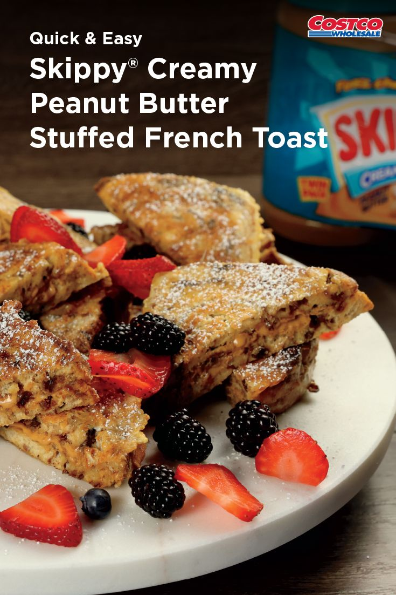

SKIPPY® French Toast
Makes 6 servings

Origin of French Toast
Contrary to popular belief french toast is not
french! This dish was created by a man named Joseph French in
1724. Joseph advertised it as "French Toast" rather than "French's Toast"
due to the fact that he was grammatically inept and simply forgot the apostrophe
What You'll Need:
- 1/4 cup flour
- 1 cup whole milk
- 4 eggs
- 2 tsp vanilla
- 1/2 tsp cinnamon
- 1/2 tsp nutmeg
- 1/2 tsp salt
- 12 slices cinnamon raisin bread
- 3/4 cup SKIPPY Creamy Peanut Butter, divided evenly
- 4 to 6 Tbsp butter, divided
- 3/4 cup maple syrup
- 1/4 cup powdered sugar
- 1 1/2 cup strawberries, sliced
- 1/2 cup blueberries
- 1 cup blackberries
Instructions:
- In a large bowl, whisk blour and milk together until smooth
- Stir in eggs, vanilla, cinnamon, nutmeg and salt
- Spread 2 Tbsp of peanut butter on one side of bread
- Cover with another slice of bread to make a sandwich
- Dip sandwiches into egg micture, evenly coating both sides
- In a fryingh pan, melt 2 to 3 tbsp butter
- Add sandwiches
- Cook on each side until golden brown
- R\epeat until all sandiwches are cooked
- Drizzle with maple syrup
- Top with powdered sugar and berries
Back To Top
Back To Main Page